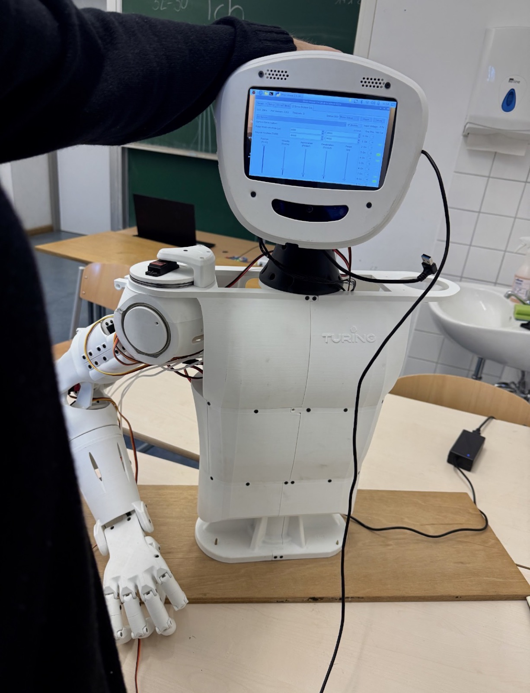

The robotics course
Since September 2024 I've taught the robotics course at my school, where a group of students builds and programs a humanoid robot. It runs weekly and I plan the sessions, split the work between mechanics, electronics and software, and teach.
I asked my school if I could run the course. Because I learned the material recently, I remember which parts need explanation, and the younger students are comfortable asking me questions.
The bottleneck, and PibUi
We had one robot and a group of students, and the robot was available two afternoons a week. That meant most of the course's time went on waiting for a turn, and anyone who had an idea on a Wednesday evening had to hold onto it until the following week.
Attendance dropped because students could use the robot only two afternoons a week. I built software that they could use without the hardware.
PibUi is the control interface I wrote for the course. It's a Flask application with a Socket.IO layer for live control, handling individual servo control, calibration and limit setting, saving and replaying poses, and an emergency stop that cuts all servo output at once.
The part that changed the course is the mock mode: with no robot connected, the whole interface still runs and returns plausible responses, so a student can write, run and debug a movement sequence on a laptop at home. Students now use the two afternoons with the robot for testing. I should have built the mock mode in the first month.
| PibUi | What it does |
|---|---|
| Servo control | Individual joints, live over Socket.IO |
| Calibration | Per-servo limits and zero positions, stored |
| Poses | Save, name and replay positions and sequences |
| Emergency stop | Cuts all servo output at once |
| Mock mode | Full interface with no robot attached |
MTG forscht.

My school runs selective classes for gifted students. One of my classmates is on Germany's team for the International Mathematical Olympiad, and two others were in the selection group for it. There are thirty to forty students in these classes at any time.
At Jugend forscht, Germany's national science competition, we were almost absent, while schools nearby were entering six or seven teams a year. I assumed for a long time that this was about our students.
Nearby schools support entries with allocated teacher time, a materials budget and a programme that guides younger students through a first project.
We had none of that, so our entries were whoever happened to organise themselves, which was almost nobody.
Roman Daugavet and I wrote a proposal and presented it to the school leadership, who approved it and took it to the parents' association, which provided a budget for project materials. We asked Dr. Waschbüsch to supervise it, then went through the gifted classes from year 8 to year 13 in person and recruited two or three interested students from each. We also designed the identity and printed the programme material.
The first meeting was on 14 July 2026.
It is too early to say whether this works. I will judge the programme by whether it keeps running after Roman and I leave school in 2027.